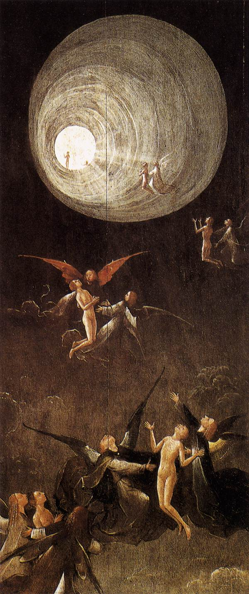
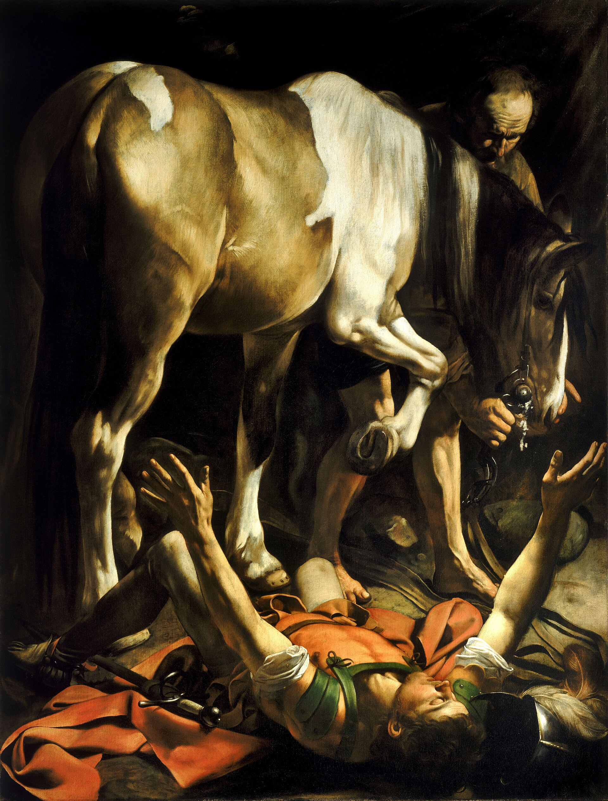

“Our normal waking consciousness is but one special type of consciousness, whilst all about it, parted from it by the filmiest of screens, there lie potential forms of consciousness entirely different.”William James, The Varieties of Religious Experience (1902)
In her own hand, late in life and at the request of her confessor, Teresa of Avila described what had happened to her in the chapel of the Carmelite convent at Ávila in the year 1565. “I saw in his hand a long spear of gold,” she wrote, “and at the iron’s point there seemed to be a little fire. He appeared to me to be thrusting it at times into my heart, and to pierce my very entrails; when he drew it out, he seemed to draw them out also, and to leave me all on fire with a great love of God. The pain was so great, that it made me moan; and yet so surpassing was the sweetness of this excessive pain, that I could not wish to be rid of it. The soul is satisfied now with nothing less than God.”1
Teresa was not a woman given to lying. The convent confessors who first interrogated her account were not naïve; the Spanish Inquisition was, even then, very interested in unauthorised mystical experience. Teresa was investigated, found not to be heretical, eventually canonised, and four centuries later named a Doctor of the Church — one of only four women in Catholic history to be given that title for her writings, which include three books that are still in print and are still read by working contemplatives. She was, by every measure available to her culture, a woman of extraordinary intellectual seriousness whose mystical writings have weathered five hundred years of close reading. The experience she describes was, to her, the central fact of her life.
It is also, to a modern neurologist reading her words, on the differential diagnosis. The sudden onset; the felt presence; the wave of bliss so intense as to be indistinguishable from pain; the apparent piercing of the body; the post-event sense of having been changed forever — these are signs which, taken together, would today get a patient referred for a careful workup of the temporal lobes. The same neurologist would also note, soberly, that the same workup would have found, in many cases like Teresa’s, nothing. The experience exists. What it is — whether it is the report of an encounter with God, or the report of a brain doing something particular in a particular tissue — is the most important question this chapter has to answer, and it is the question this chapter will refuse to settle.
By the end of these pages you will know what modern neuroscience can describe about the mystical state: the temporal-lobe involvement, the dissolution of body-boundaries in the parietal cortex, the cross-cultural pattern of near-death reports, the reliable production of mystical experience in the laboratory by a single chemical. You will also know what it cannot describe. The honest line between the two — defended on both sides — is the substance of this chapter and the spirit in which it should be read.
The experience exists. What it is — an encounter with God, or a brain doing something particular in a particular tissue — is the question this chapter will, at the end, refuse to settle.
The Founding SurveyWilliam James and the Four Marks
The modern study of religious experience begins, like so much else in psychology, with William James — the Harvard philosopher-physician whose Varieties of Religious Experience (1902) remains the deepest single book ever written on the subject. James, an unbeliever from a devout family, set himself the task of taking the testimony of mystics seriously without taking it on. He collected hundreds of first-person accounts — from Saint Teresa and Saint John of the Cross, from Sufi masters, from Quakers and Methodists and converts to obscure American sects — and looked for what they shared.
He found four features that recur, across centuries and traditions, with such consistency that he treated them as the defining marks of the mystical state.2
James’s four marks of mystical experience
Ineffability — the report that the experience cannot be put into words; that to describe it is to falsify it; that the listener who has not had it cannot truly receive it.
Noetic quality — the experience comes with the certainty of having known something, a state of insight into truths unattainable by ordinary reason.
Transiency — the state cannot be sustained for long; minutes to perhaps an hour or two; the memory afterward is profound but partial.
Passivity — the experience comes upon the subject; cannot be willed; the subject feels acted upon by something larger than themselves.
The marks describe Teresa precisely. They also describe, almost word for word, the modern reports collected in the last twenty years from research subjects given high doses of psilocybin in controlled clinical settings — the chemical, that is, of certain Central American mushrooms used for centuries in indigenous religion. We will come to that experimental work shortly. The point worth making now is one James himself insisted on: the marks of the experience are stable across culture and century, while the explanatory framework the experiencer reaches for is supplied by the tradition they were already in. The Christian reports an angel and Christ; the Buddhist reports emptiness; the Hindu reports brahman; the modern atheist subject in a Hopkins laboratory reports a sense of cosmic unity without any deity. The phenomenology is shared. The metaphysics is local.
The MechanismThe Temporal Lobes and the Felt Presence of God
The neurological investigation of religious experience begins, properly, in Montreal in the 1930s, with the great neurosurgeon Wilder Penfield. Penfield’s technique — pioneered to map the brains of conscious epilepsy patients awaiting surgery — was to stimulate the cortex electrically with a small probe and ask the patient what they experienced. The patient was awake; the brain itself has no pain receptors; the responses were detailed and reliable. Penfield mapped the somatosensory and motor cortices in this way and built the famous “homunculus” diagrams. Almost incidentally he also reported a small set of effects that emerged when he stimulated parts of the temporal lobes. Patients felt a presence in the room. They reported sudden vivid memories that seemed more than ordinary recall. Some reported a feeling of being outside their bodies, looking down. A few reported a state of profound, inexplicable joy.3
The same connection was being made, from the other end, by the neurologist Norman Geschwind in the 1970s and 80s. Geschwind described a constellation of personality features that appeared, with statistical reliability, in patients with chronic temporal-lobe epilepsy: hypergraphia (a compulsion to write at length, often on philosophical or religious themes), changes in sexual interest, a deepening of emotional life, and — the feature that caused the syndrome to be known, in some circles, as “the religious lobe” — hyperreligiosity. Patients in whom epileptic activity was confined to a particular region of the temporal lobe were more likely than the general population to report sudden religious conversions, mystical experiences during or between seizures, and a settled sense of cosmic meaning underlying their illness. Many of them, on having an episode, described it in language essentially indistinguishable from Teresa’s.4
This finding, like so much in this volume, has to be held carefully. It does not show that all mystical experience is epilepsy. The overwhelming majority of mystics have not, on careful examination, had detectable temporal-lobe epilepsy; the overwhelming majority of temporal-lobe epileptics do not become mystics. What the finding does show is that there is a part of the brain capable, when active in particular ways, of producing experiences the subject reads as religious. The same tissue that, misfiring, gives the epileptic patient a sense of God in the room, gives Teresa — presumably without misfiring — her ecstasy. This is not a debunking. It is the discovery of the organ. We will return to what that does and does not entail.
A more recent and contested chapter of this work is Michael Persinger’s “God helmet,” an apparatus designed to induce weak magnetic fields in the temporal lobes and reported to produce, in some subjects, felt presences and mystical sensations. The original results were striking; subsequent attempts to replicate them under stricter blinding have largely failed, and the consensus in the field is that the helmet’s effects are mostly suggestion-driven rather than electromagnetic. The temporal-lobe involvement in mystical experience is well-established; the helmet itself, less so.5
The Brain at PrayerNewberg and the Dissolving Boundary
The most sustained modern programme of brain-imaging during religious experience is the work of the radiologist Andrew Newberg and his colleagues, beginning in the late 1990s. Newberg coined, with the philosopher Eugene d’Aquili, the unlovely word neurotheology for the field. The method is straightforward: bring committed religious practitioners — Franciscan nuns in contemplative prayer, Tibetan Buddhist monks in meditation — into the laboratory, allow them to reach what they themselves recognise as a deep state, and inject a tracer that allows the brain’s blood flow at that moment to be imaged by SPECT.6
What Newberg found, in study after study, is two consistent patterns. First, increased activity in the frontal lobes — the areas associated with focused attention; the brain doing the work of holding the meditative object steady. Second, and more interestingly, decreased activity in a region of the right parietal lobe known as the posterior superior parietal lobule. This region is, in ordinary functioning, what gives you the sense of where your body ends and the rest of the world begins. It maintains the felt boundary of the self. When it goes quiet, that boundary goes quiet. The result, reported with surprising consistency by Newberg’s subjects, is the experience of being merged with something larger: with God for the nuns, with the universe for the monks, with no particular content but a deep and ineffable unity for any subject in whom the region went sufficiently quiet.
This is, by some distance, the most empirically grounded mechanism we have for the central unitive feature of the mystical state. The traditions have always reported it in their own languages — the dissolution of self, the merger with the divine, the loss of the small I in the great I am — and the parietal data describe one of the things that has to be happening in the brain for that report to be produced. Notice what the data does not describe. It does not say there is nothing for the dissolved self to be merging with. It says only that the experience of merging has, as one of its biological correlates, a quieted patch of cortex.
The Tunnel of LightWhat a Painter in 1490 Knew About Dying

For half a century now, hospital intensive-care units have been a quiet laboratory of a particular kind of religious experience. As resuscitation technique has improved, more patients survive cardiac arrest than at any previous point in human history; a non-trivial fraction of those who survive report, on regaining consciousness, a recognisable set of experiences from the period during which their hearts had stopped. The pattern recurs across cultures with high consistency: a sense of leaving the body, often viewing the resuscitation from above; a passage through a dark space or tunnel; the appearance, at the far end, of an intense light; the felt presence of deceased relatives or of a being made of light; an encounter with the bounds of life and a turning back. The phenomenon is now called the near-death experience, and it has been studied with increasing seriousness for fifty years.7
What is striking about the Bosch painting on the left is that it predates the modern reports by half a millennium. The features — the tunnel, the light at the far end, the angelic guides, the small approaching figure — are not standard iconography of late-medieval Catholicism. There were no NDE memoirs in Bosch’s Netherlands, no Raymond Moody books on the bedside table, no cliché available for him to crib. Either Bosch had access to first-person accounts of his contemporaries that have not survived (more probable than one might think; some medieval visionary reports preserve essentially the same imagery), or he produced the image himself out of the same neural template that modern resuscitated patients produce. Either way, the painting is evidence that the cluster of experiences is genuinely human and genuinely old; it is not a 1970s cultural artefact, as some early sceptics suggested.
The honest scientific accounting of NDEs — carried out most carefully by the Dutch cardiologist Pim van Lommel and the American psychiatrist Bruce Greyson — gives them about the following standing.8 The experiences are real in the sense that they really do happen to a substantial minority of resuscitated patients. They are not, as has sometimes been suggested, the product of subsequent cultural overlay; many patients report them with detail and conviction before they have been exposed to the modern literature. The features — tunnel, light, beings, life review — are sufficiently cross-cultural to suggest a shared neural mechanism. Candidate mechanisms (anoxia, elevated CO2, ketamine-like endogenous compounds, REM intrusion into waking consciousness) all account for parts of the phenomenon and none for all of it. The genuinely unsettled question — whether some NDEs occur during periods of measurably absent brain activity — is hard to test rigorously and the data on it is mixed. The honest reading is that NDEs are real experiences with plausible partial neural explanations and a small residue not yet fully accounted for.
The Laboratory Mystical ExperienceWhat Psilocybin Reliably Produces
The most surprising development in this area, and the one most likely to change the next decade of debate, is the reliable laboratory production of full mystical experience by careful administration of a single chemical. In a series of carefully designed studies at Johns Hopkins, Imperial College London, and a handful of other institutions, healthy volunteers given high doses of psilocybin — the active component of the mushrooms used for centuries by some Mesoamerican religious traditions — in supportive settings have produced, with striking consistency, experiences that meet all four of William James’s criteria. Subjects report ineffability, a noetic conviction of having known something fundamental about reality, transiency, and passivity. They report the dissolution of the self, the felt presence of something larger, encounters with what some describe as God and others as a cosmic intelligence. Twelve months later, a majority of subjects rate the experience as among the five most personally meaningful of their lives, comparable in significance to the birth of a child or the death of a parent.9
The implications are large in two directions. Therapeutically, the experience appears to produce lasting decreases in depression, anxiety, addiction, and end-of-life distress that are larger and more durable than any other intervention currently available. Psilocybin-assisted therapy is now in late-stage clinical trials for several indications and is likely, in the next few years, to be approved for clinical use in several countries.10 Philosophically, the implications are stranger. Whatever else mystical experience is, it is now reliably producible in the laboratory by a single small molecule, in the right dose, in the right setting, in subjects who walked into the laboratory as ordinary research volunteers. The mystical state is, in this respect, as reliably evokable from the brain as a memory by a hippocampal stimulator or a hallucination by sleep deprivation.
What we make of this is a question for the next section, because it returns us to the central grapple of the whole chapter.
The Iconic CasePaul on the Road to Damascus

The single most consequential mystical experience in the history of Western religion is the one recorded by Saul of Tarsus on the road to Damascus, c. 35 CE. By his own account — written by him in Galatians, and described in three different versions in the Acts of the Apostles — he was struck on the road by a sudden light from heaven; fell to the ground; heard a voice; was rendered blind for three days; and emerged as a different person, a man who would, in the next thirty years, write thirteen letters of the New Testament and carry Christianity from a Galilean sect into a world religion.11 Without the conversion on the road, there is no Christian Europe.
The honest scientific reading of Paul’s account is that we cannot, at two thousand years’ distance, do a neurology on him. Modern hypotheses — including a possible temporal-lobe seizure, a transient ischemic episode, sunstroke-induced visual disturbance, even (in one provocative monograph) toxic effects of digitalis — are speculations on a witness we cannot examine. But the point we want to make is not about which hypothesis is right. It is about what the case shows. Paul’s experience meets every one of James’s four criteria. It was almost certainly accompanied, on any modern reading, by identifiable activity in identifiable brain regions. And it changed the world, and remains, for the world’s largest religion, the founding non-fictional encounter with the risen Christ. The neuroscience does not, by itself, decide whether what Paul met on the road was Christ or his own temporal lobe. It does not decide the question, and it never will.
The Question This Chapter Refuses to Settle“Doesn’t Neuroscience Show There Is No God?”
We must, in this chapter above all others, be honest. The deepest religious experience in human history can now be partly explained, partly reproduced, and partly imaged in the laboratory. The temporal-lobe involvement is real. The parietal-deactivation correlate of unity experience is real. The psilocybin-induced mystical state is reliable enough to be in late-stage clinical trial. Doesn’t all of this together amount to a demonstration that God is, in the end, just a brain doing something particular?
The honest answer is no, and it is the same answer we have given in this volume for HADD and we will give again, less directly, in the closing chapter. The neurological description of an experience does not, by itself, settle the question of what the experience is of. Consider the parallel case of love. We can now describe the neurochemistry of romantic love — the dopamine surges of early infatuation, the oxytocin of pair-bonding, the role of vasopressin in long-term attachment. We have brain scans of people in love that show distinct patterns in particular regions. A complete neurochemistry of love does not, however, lead any of us to the conclusion that the person we love is not really there, or that love is “nothing but” chemistry. We say, more sensibly, that love is a real human relationship to a real other person, and that one of the things going on when we are in it is the brain doing what brains in love do.
The same logic applies, with the same honesty, to mystical experience. If God exists, our experience of God would have to occur in a brain, in a particular set of tissues, with detectable correlates. To find those correlates is, in that case, exactly what we should find. To find them is not, by itself, to show that what the brain is experiencing is nothing more than its own activity. That is a separate question; it is not a question neuroscience can answer; and the honest position — honoured by every careful neurotheologian we have read, from James to Newberg — is to say so plainly.12
What the neuroscience does let us do, and this is not a small thing, is to take the experiences seriously rather than dismissing them. A century ago Teresa’s ecstasy would have been called “hysteria” by secular medicine and “sanctity” by the Church and the two would not have spoken to each other. Today we can say something more useful: that there is a kind of human experience, well documented in laboratory and clinical settings, with reliable phenomenological features and identifiable neural correlates, which a believer holds to be an encounter with God and a sceptic holds to be a complex and meaningful internal event, and that the experience itself does not by its own evidence resolve which reading is correct. That is, finally, an adult position, and we recommend it.
The neuroscience does not decide whether what Paul met on the road was Christ or his own temporal lobe. It does not decide the question, and it never will.
A Practical TestJames and the Fruits of the Experience
If neuroscience cannot tell us what mystical experience is of, William James offered, more than a century ago, a practical alternative to settling the metaphysical question. He recommended that we judge religious experience the way we judge any other kind of consequential event: by its fruits. The mystical episode that leaves a person more loving, more courageous, more able to bear suffering, more present to those around them, more committed to the work the life requires — that experience, James said, should be honoured whatever we end up thinking happened in its biology. The mystical episode that leaves a person frightened, dogmatic, contemptuous of others, separated from ordinary life — that experience, however striking its phenomenology, should be treated with caution.13
The criterion is simple, ancient, and survives every modern complication. It is, in fact, what the great mystical traditions themselves have always used as their internal test. Catholic discernment of spirits asks essentially this question. So does the Buddhist tradition’s evaluation of attainment. So does any clinical assessment of when a religious-feeling experience is healthy and when it is the first symptom of a psychotic break. Neuroscience adds nothing and takes nothing away. The pragmatic question of what the experience does to the life is the right question, and it does not require us to settle the metaphysical question.
“Has science explained God?”
Six honest answers, none of them simple.
“We have, with care, identified neural correlates of the unitive experience — parietal deactivation, temporal-lobe involvement, default-mode network changes under psilocybin. We can now produce the experience reliably in the lab. What the experience is of is not a neuroscientific question. We have measured the organ; we have not measured the meaning.”
“Finding the organ is not the embarrassment to faith you imagine it is. Of course there is an organ. We were made to perceive God; perception requires biology; biology has an evolutionary history. To find the tissue that lights up when a Carmelite prays is not to find that her prayer is empty. It is to find the body that prays.”
“In thirty years of practice I have seen religious experience save lives and ruin them. The honest test is not whether the patient’s vision came from God or from the temporal lobe. The honest test is what the vision did to their love, their work, and their treatment of the people in front of them. James’s criterion is the clinical criterion. It has not been improved on.”
“Every culture has produced these experiences, and every culture has produced trained specialists — shaman, monk, contemplative, prophet — whose vocation was to have them well and integrate them helpfully. The modern West is unusual in not having a recognised social role for the person who has had one. That is a deficit, not a virtue. We treat such people, often, with psychiatric medication or with embarrassment, when an older society would have given them a vocation.”
“The phenomenology is real; the correlates are real; the reproducibility under psilocybin is striking. None of that gives me, as a sceptic, evidence for any specific supernatural entity. What it gives me is a humbler position than I started with: religious experience is not a category error. It is a class of natural events with consequential effects. Whether to honour the metaphysics the experiencer reaches for is a different question, and on it I remain unmoved.”
“You may, of course, describe the wave and the chemistry and the tissue. You may show me the SPECT scan. None of this touches the thing itself, which I cannot speak of and which has reorganised every priority of my life around it. I do not require you to share the conclusion. I require only that you not insist, from outside, that the experience was less than I know, from inside, it was.”
The Honest RemainderWhat This Chapter Will and Will Not Say
Because this is the chapter on God, the honesty has to be carried more carefully than usual, and on both sides.
What we will say. Religious experience has neural correlates, and a great many of them are now well mapped. The temporal lobes are involved in the felt presence; the parietal lobe’s quiet is correlated with the sense of unity; psilocybin reliably reproduces the full mystical state in the laboratory. The experiences are real, are cross-cultural, are not signs of pathology in most subjects, and have measurable beneficial effects on later life and well-being. The findings honour, rather than embarrass, both the long contemplative traditions and the modern science of mind.
What we will not say. That neuroscience has shown there is no God; that mystical experience is “just” brain activity; that Teresa’s ecstasy was epilepsy and therefore not an encounter with the Beloved; that Paul met a temporal-lobe seizure on the Damascus road and not a person. These conclusions do not follow from the evidence, and to claim that they do is to overreach beyond what the data licenses. They are the equivalent move to claiming, from the chemistry of love, that the person you love does not exist.
What we cannot say. That neuroscience has shown there is a God; that the parietal data prove cosmic unity; that the reliability of mystical experience under psilocybin is evidence of a higher reality the chemical lets us touch. These conclusions also do not follow. Mystical experience is, on the data, a class of natural events with reliable phenomenology and neural correlates; whether what it discloses corresponds to any reality outside the experiencer’s brain is, on the data, not settled.
The honest position, then, is the one James reached more than a century ago and that the field has not improved on. The mystical experience is real and important. Its biology is, increasingly, describable. The further question — the metaphysical one — remains open. Different people, possessing the same science, may answer it differently. This chapter has no opinion about which answer is correct. It has only a strong opinion about what it would be dishonest to pretend was the case.
Myth vs. RealitySetting the Record Straight
What Is Often Said (on both sides)
From the materialist side: “Modern neuroscience has shown that religious experiences are just brain activity. God is a misfiring temporal lobe. Mystical states are nothing more than chemistry.”
From the credulous side: “Brain scans of monks in prayer prove the reality of the spiritual realm. Near-death experiences prove the soul leaves the body. Psilocybin gives access to higher dimensions.”
What the Evidence Shows
Both claims overreach. The neuroscience has identified real, reliable correlates of mystical experience; it has not shown the experience corresponds to nothing, and it has not shown it corresponds to anything in particular outside the brain. The mystical state is now an established class of human experience with describable phenomenology, identifiable neural correlates, and measurable life-effects. What it is of is the metaphysical question. The data is silent on it, and any reading of the data that claims otherwise is reading beyond the data.
The lines worth carrying out of this chapter.
- Mystical experience is real, ancient, cross-cultural, and shares four features wherever it appears — ineffability, the certainty of having known something, transiency, passivity. James named these in 1902 and they have held up.
- The brain regions involved are increasingly well mapped. Temporal lobes for the felt presence; parietal deactivation for the dissolution of self; default-mode-network shifts under psilocybin; the experience reliably reproducible in laboratory conditions.
- Finding the organ is not finding that the organ reports nothing. Neuroscience can describe the perception. It cannot adjudicate the perceived. To overreach in either direction — to declare God refuted or proven by the scans — is to mistake the map for the territory.
- The right test is James’s. Judge the experience by its fruits. The mystical state that leaves a life more loving, more courageous, more able to bear, deserves the honour the traditions have always given it. The state that leaves a life smaller and more fearful does not, however striking its phenomenology.
- The honest line is this: the experience exists; its biology is real; what the experience is of remains, and may always remain, the question reasonable people will answer differently. That is not a failure of the science. It is the science being honest about what it is and what it isn’t.
If you keep one sentence: science has measured the organ that perceives God; it has not measured God, and it cannot, and the believer and the sceptic can — for once — agree on that one line and walk away changed.
Research ReferencesSources & Notes
- HistoryTeresa of Ávila, Vida (1565), chapter 29 — the “transverberation” passage. Modern translation: Kavanaugh, K. (trans.), The Collected Works of St. Teresa of Avila (ICS Publications).
- ReferenceJames, W., The Varieties of Religious Experience (1902), Lectures XVI–XVII on mysticism — the source of the four-marks framework.
- SciencePenfield, W., The Mystery of the Mind (1975) and earlier papers from the Montreal Neurological Institute on intra-operative cortical stimulation.
- ScienceBear, D. M. & Fedio, P., “Quantitative analysis of interictal behavior in temporal lobe epilepsy,” Archives of Neurology (1977) — the Geschwind-syndrome features; see also Devinsky, J. & Lai, G., “Spirituality and religion in epilepsy,” Epilepsy & Behavior (2008).
- DebatedPersinger, M. A., on the “God helmet” (numerous papers from the 1980s); the failed replication is reported in Granqvist, P. et al., “Sensed presence and mystical experiences are predicted by suggestibility, not by the application of transcranial weak complex magnetic fields,” Neuroscience Letters (2005).
- ScienceNewberg, A. B., d’Aquili, E. G. & Rause, V., Why God Won’t Go Away (2001); Newberg, A. B., Principles of Neurotheology (2010).
- ReferenceMoody, R. A., Life After Life (1975) — the popular description; modern treatment: Greyson, B., After: A Doctor Explores What Near-Death Experiences Reveal About Life and Beyond (2021).
- Debatedvan Lommel, P. et al., “Near-death experience in survivors of cardiac arrest: a prospective study in the Netherlands,” The Lancet (2001); Parnia, S. et al., AWARE studies on consciousness during cardiac arrest.
- ScienceGriffiths, R. R. et al., “Psilocybin can occasion mystical-type experiences having substantial and sustained personal meaning and spiritual significance,” Psychopharmacology (2006); follow-ups in 2008, 2011, 2018.
- ScienceGriffiths, R. R. et al., “Psilocybin produces substantial and sustained decreases in depression and anxiety in patients with life-threatening cancer,” Journal of Psychopharmacology (2016); Carhart-Harris, R. L. et al., on psilocybin for treatment-resistant depression.
- HistoryActs 9, 22, and 26; Galatians 1:11–17. Modern discussion of the conversion in Wright, N. T., Paul: A Biography (2018), and in the older medical literature reviewed by Landsborough, D., “St Paul and temporal lobe epilepsy,” Journal of Neurology, Neurosurgery & Psychiatry (1987).
- ReferenceOn the philosophical point: Alston, W. P., Perceiving God (1991); Stoeber, M. & Meynell, H. (eds.), Critical Reflections on the Paranormal; the “genetic fallacy” literature.
- ReferenceJames, W., Varieties, Lecture XX (“Conclusions”) on the pragmatic criterion — judging religious experience by its fruits.
Citations support the science presented; a production edition would carry full bibliographic detail and DOIs, externally verified.
Going FurtherRecommended Books
Read
- William James, The Varieties of Religious Experience (1902) — still the deepest single book on the subject
- Andrew Newberg, Principles of Neurotheology (2010) and How God Changes Your Brain (with Mark Robert Waldman, 2009)
- Michael Pollan, How to Change Your Mind (2018) — on the psychedelic mystical-experience research
- Bruce Greyson, After (2021) — the careful clinical psychiatrist’s account of NDEs
- Teresa of Ávila, The Interior Castle (1577) — the great first-person mystical text
- Aldous Huxley, The Doors of Perception (1954)
Watch & Listen
- Roland Griffiths interviews on the Johns Hopkins psilocybin programme
- Andrew Newberg, talks on neurotheology
- Bruce Greyson, talks on near-death-experience research